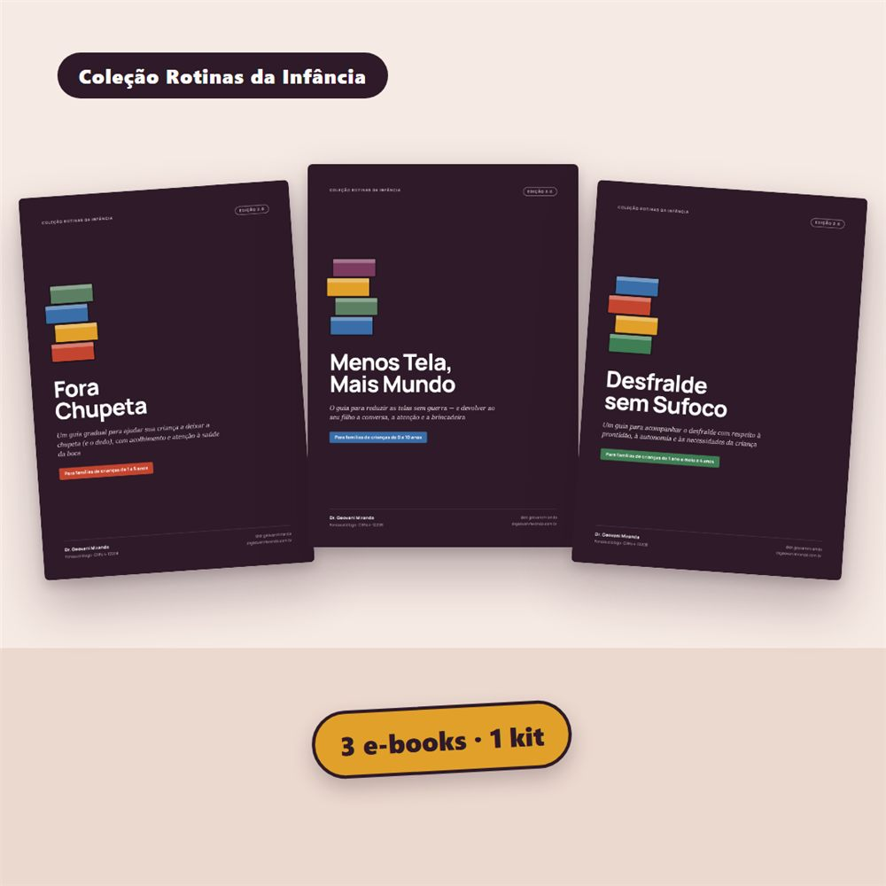
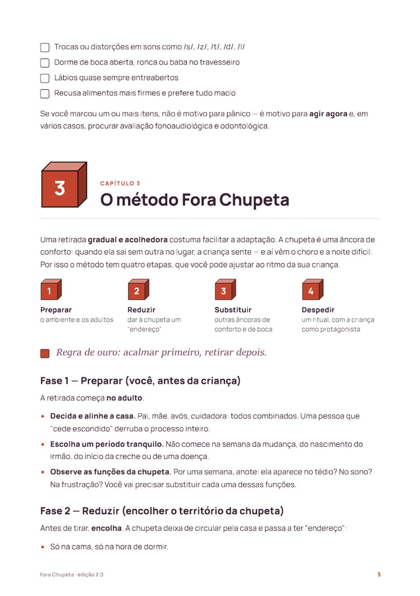
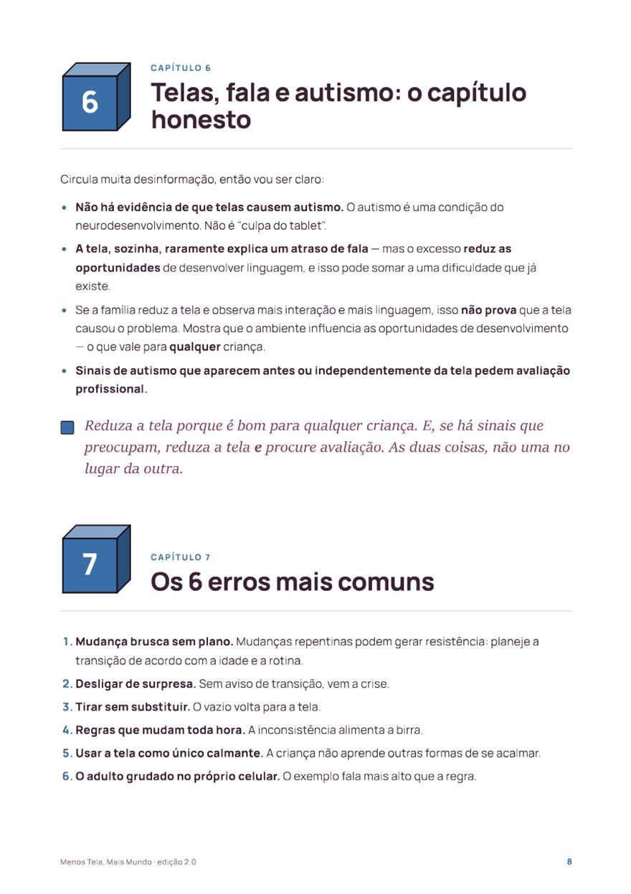
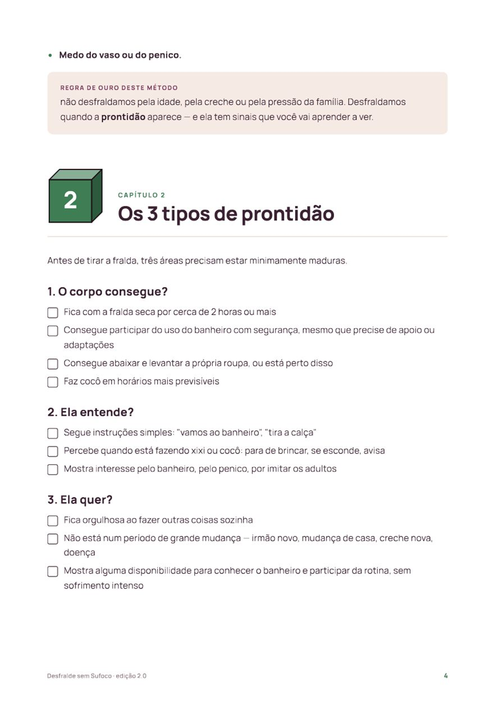

Para famílias de crianças de 1 a 5 anos
Chupeta, tela e fralda: três passagens que não precisam virar guerra.
Três e-books com um método passo a passo para cada uma — sem culpa, sem pressão, com ferramentas para preencher e os sinais de quando procurar ajuda profissional.

Nenhuma das três é sobre arrancar algo da criança. É sobre trocar a cobrança por um processo que ela consegue acompanhar.
Talvez você já tenha vivido isso
Três cenas de quase toda casa com criança pequena
E, em cada uma, alguém dando um conselho diferente: “tira logo”, “deixa que sai sozinho”, “na idade dele eu já…”. Os livros começam tirando a culpa da mesa e trocando o palpite por um plano.
A chupeta caiu no chão da farmácia e virou crise de choro.
Para muitas crianças, a chupeta é conforto — e você não errou por oferecer. O uso frequente e prolongado, porém, merece atenção, principalmente pela saúde da boca e pelo desenvolvimento da face.
Desligou o celular e veio uma birra enorme.
A tela não é o inimigo. O uso excessivo pode ocupar o espaço da conversa, da brincadeira e da troca — e a proposta é reorganizar os hábitos da casa sem mudanças bruscas.
A creche pede, a avó opina, e a fralda vira assunto de todo almoço.
A idade não é o critério principal: a prontidão é. Conduzir sem cobrança evita pressão desnecessária — e dor, prisão de ventre ou dificuldade persistente para evacuar pedem orientação do pediatra.

Livro 1 · 1 a 5 anos
Fora Chupeta
Um método gradual para deixar a chupeta — e o dedo — com acolhimento e atenção à saúde da boca.
- Prepararo ambiente e os adultos
- Reduzirdar à chupeta um “endereço”
- Substituiroutras âncoras de conforto e de boca
- Despedirum ritual, com a criança como protagonista
E mais: um roteiro para organizar a semana da despedida (um roteiro, não um prazo garantido), o que fazer com o dedo, os 7 erros mais comuns nessa transição e quando procurar fonoaudiólogo e odontopediatra.
Livro 2 · 0 a 10 anos
Menos Tela, Mais Mundo
Não é sobre proibir: é sobre reequilibrar. Reduzir as telas sem guerra e abrir mais espaço para a conversa, a atenção e a brincadeira.
- Mapearquando e por que a tela aparece
- Reduziruma janela de cada vez
- Substituirinteração, brincadeira e tédio criativo
- Sustentarregras claras e o exemplo do adulto
E mais: o desafio de 14 dias com mudanças graduais (um roteiro, não um prazo garantido), o que a Sociedade Brasileira de Pediatria recomenda para cada idade, os sinais de que a tela está pesando e um capítulo honesto sobre telas, fala e autismo.


Livro 3 · quando a prontidão aparece
Desfralde sem Sufoco
Reconhecer quando a criança está pronta e conduzir o desfralde com firmeza gentil — sem prazo fixo e sem castigo.
- Prepararambiente, rotina e palavras
- Apresentaro penico, sem pressão
- Praticaridas regulares, roupa fácil
- Sustentarconsistência, sem punir
E mais: os 3 tipos de prontidão com checklist, o registro de acertos, a criança que segura o cocô, a noite sem pressa, adaptações para crianças autistas ou com outra condição do desenvolvimento e quando procurar o pediatra.
O que você recebe
Três PDFs para ler no celular ou imprimir
Cada livro funciona sozinho, com o próprio método, ferramentas para preencher e referências no fim. Você começa pela passagem que mais pesa hoje.
| Fora Chupeta10 páginas · 1 a 5 anos | R$ 27 |
| Menos Tela, Mais Mundo10 páginas · 0 a 10 anos | R$ 27 |
| Desfralde sem Sufoco11 páginas · a partir dos sinais de prontidão | R$ 27 |
| Comprando separado | R$ 81 |
| No kit, os três | R$ 47 |
Quem escreveu
Dr. Geovani Miranda
Fonoaudiólogo, bacharel em Fonoaudiologia · CRFa 4-12208 · com anos de experiência.
Os três livros reúnem orientações educativas para o dia a dia, com referências — como as recomendações da Sociedade Brasileira de Pediatria sobre telas — e dizem com clareza quando é hora de procurar um profissional.
Com toda a transparência
O que o kit é — e o que não é
- É material educativo para organizar essas mudanças em casa.
- Não diagnostica e não substitui pediatra, odontopediatra, fonoaudiólogo ou outro profissional.
- Não garante resultado nem estabelece prazo: cada criança tem o seu ritmo.
- Dor, prisão de ventre, perda de habilidades que a criança já tinha, dificuldade para se alimentar ou preocupação com a comunicação pedem avaliação — inclusive enquanto você usa os livros.
Perguntas frequentes
Antes de comprar
Meu filho usa chupeta, tela e fralda. Faço tudo de uma vez?
Não precisa. Cada livro funciona sozinho: escolha a passagem que mais pesa hoje na rotina de vocês e comece por ela.
Para que idade serve?
Fora Chupeta foi escrito para crianças de 1 a 5 anos e o Menos Tela vale de 0 a 10. No desfralde, a prontidão conta mais do que a idade — o livro ensina a reconhecê-la.
Meu filho é autista ou tem outra condição do desenvolvimento. Serve?
O Desfralde tem um capítulo de adaptações para essas crianças, e o Menos Tela tem um capítulo honesto sobre telas, fala e autismo. Essas orientações precisam ser ajustadas a cada criança e, quando há acompanhamento, combinadas com a equipe.
Posso comprar só um?
Pode: cada livro sai por R$ 27 na Biblioteca. No kit, os três saem por R$ 47.
Preciso imprimir?
Não é obrigatório: dá para ler no celular. Os checklists e os registros ficam melhores impressos.
Como recebo e se eu não gostar?
Logo depois da confirmação do pagamento, a Hotmart envia o acesso por e-mail para baixar os três PDFs. Você tem 7 dias de garantia: se não for para você, pede o reembolso pela própria Hotmart.